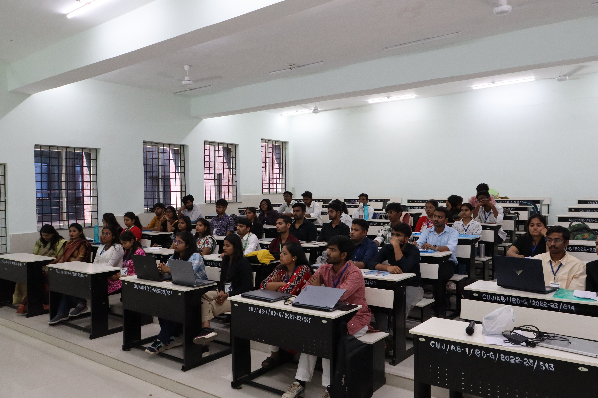
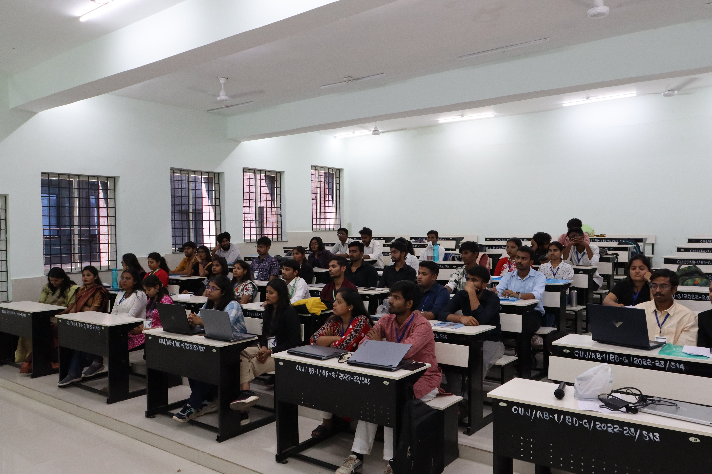

Join the Revolution in Technology
Become a part of the Computer Society of India (CSI) at Central University of Jharkhand.
What is CSI?
The Computer Society of India is the largest body of computer professionals in the country. Established in 1965, it has been instrumental in guiding the Indian IT industry. CSI is a non-profit organization focused on scientific and educational advancement in Information Technology.
At Central University of Jharkhand, the CSI Student Chapter is a dynamic community where students can learn, network, and grow. We bridge the gap between academic theories and real-world applications by organizing workshops, seminars, and networking events that prepare students for the future of tech.
A Landmark Event: Our Inaugural National Seminar
Celebrating the launch of our student chapter with a monumental two-day seminar on AI, Cybersecurity, and Data Science.
35+
Research Papers Presented
Innovations in AI, ML, and cybersecurity from across the nation.
10+
Distinguished Speakers
Insights from top academics and industry leaders.
2
Power-Packed Days
Of knowledge sharing, networking, and inspiration.
Day 1: Inauguration & Innovation
The seminar kicked off with the official inauguration of the CSI Student Chapter at CUJ. The day was marked by inspiring keynotes from luminaries like Prof. A. K. Nayak (Former CSI President) and Prof. Ashutosh Kr. Singh (Director, IIIT Bhopal), who set a high-energy tone. Students and researchers then took the stage, presenting groundbreaking papers on secure machine learning, data privacy, and threat detection, showcasing the bright future of tech.
Day 2: Expert Insights & Accolades
The second day delved deep into practical applications with expert talks on wireless network security, lightweight cryptography, and the future of digital identity. Speakers from prestigious institutions like the University of Hyderabad and NIT Patna, along with industry CTO Mr. Gautam Hazari, bridged the gap between theory and real-world challenges. The event concluded with a grand valedictory session, celebrating the best paper presenters and reinforcing our mission to innovate.
Research Paper Domains
The seminar attracted a diverse range of research, with a strong focus on today's most critical technology fields.
üé§ Distinguished Speakers
Thought leaders who inspired us with their insights on technology and innovation.
Prof. A. K. Nayak
Former CSI President
Keynote on the future of computer societies and global collaboration.
Prof. Ashutosh Kr. Singh
Director, IIIT Bhopal
Talk on emerging research trends in AI & cybersecurity.
Mr. Gautam Hazari
CTO, Global Industry Expert
Insights on digital identity and real-world cybersecurity challenges.
üèÜ Best Paper Award Winners
Celebrating the brilliance of our young researchers who pushed the boundaries of innovation.
Om Vishesh
AI-based Diabetic Retinopathy Diagnosis
üèÖ *Best Innovation Award* ‚Äì Recognized for applying AI to solve critical healthcare challenges.
Neha Kumari
Cybersecurity in E-Learning: Challenges and Solutions
üèÖ *Best Application-Oriented Paper* ‚Äì For addressing security risks in modern digital classrooms.
Shreya Kumari
The Convergence of Quantum Computing and Cybersecurity
üèÖ *Young Researcher Award* ‚Äì Recognized for exploring futuristic directions in cybersecurity.
"Their work represents the passion, innovation, and excellence that CSI-CUJ stands for."
üì∏ Event Highlights
A glimpse into the energy, learning, and innovation that defined our inaugural seminar.
 


üöÄ What's Next? Get Hyped!
The innovation doesn’t stop here — we’re just getting started!
CSI-CUJ × GDG Ranchi
✨ Pre-DevFest Hype Event!
We are thrilled to announce our upcoming collaboration with Google Developer Groups (GDG) Ranchi. Together, we‚Äôre bringing you an exclusive pre-DevFest event filled with inspiring tech talks, hands-on workshops, and unbeatable networking opportunities. üöÄ
Why You Should Join CSI-CUJ
Lead & Innovate
Have a great idea for a workshop or event? As a CSI member, you can pitch it! We provide the platform, resources, and support to bring your vision to life.
Boost Your Resume
Active membership and leadership roles in a prestigious national body like CSI add significant value to your professional profile, making you stand out to employers.
Kickstart Your Research
Get guidance and opportunities to start working on research papers early. Gain exclusive access to seminars, conferences, and a network of academic experts.
Recognition & Awards
Your contributions won't go unnoticed. We provide official certificates for participation and organization, along with awards for outstanding members.
Exclusive Access
CSI members get preferential entry and sometimes discounts for national-level seminars, workshops, and competitions, expanding your learning opportunities.
Build Your Network
Connect with peers, professors, and industry professionals. Our collaborations with groups like GDG open doors to a wider tech community.